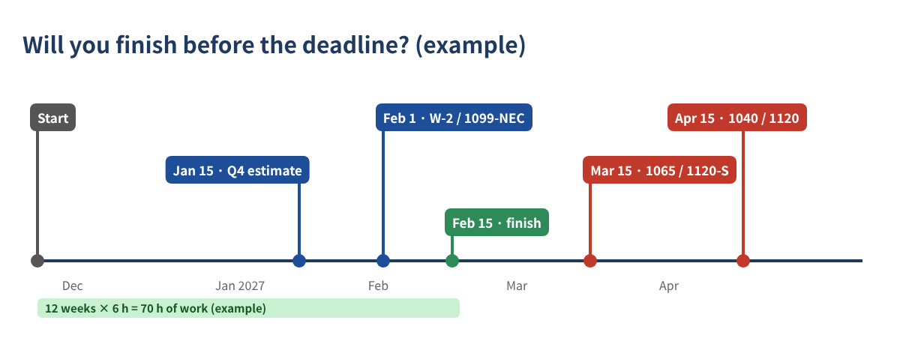
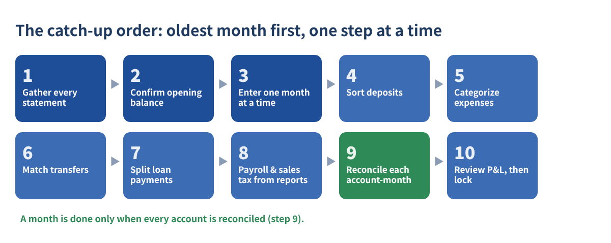
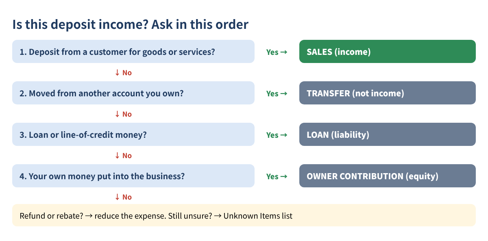
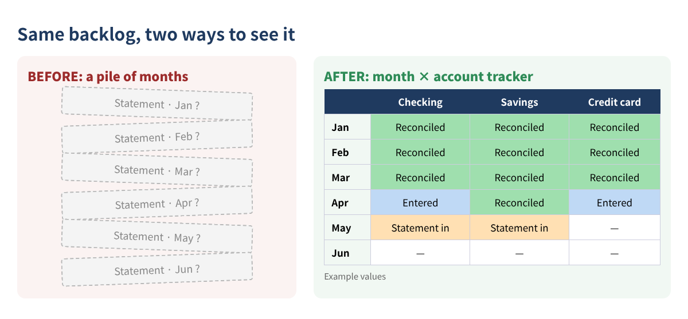

Behind on Your Bookkeeping? How to Catch Up Before Tax Season (Step-by-Step Plan With Formulas)
↓ Get the free Excel + PDF kit for this article
It happens to almost every small business at least once: a busy season, a staff change or a family matter, and suddenly the books have not been touched since spring. Statements pile up, receipts sit in a folder, and the 1099, W-2 and tax return deadlines get closer every week.
The good news is that catching up is a project with a known size. If you measure it first and then work in the right order, you can see on paper — in November — whether you will finish in time. This post shows the exact method, with formulas you can type into Excel or Google Sheets.
Who this is for: owners and office managers who keep their own books (or plan to fix them before handing them to a tax preparer) and are one or more months behind.
Step 1: Measure the backlog before you start
Most people start by opening the oldest statement and typing. That feels productive but hides the real question: will this be done by my deadline? Answer it first with four numbers:
- First month not done (for example, January 2026).
- Number of business bank and credit card accounts.
- Transactions per month across all accounts. Open one busy month's statements and count the lines.
- Hours you can really spend per week.
Then use three planning assumptions you can adjust: about 1.5 minutes per transaction to enter and categorize, about 20 minutes per account per month to reconcile, and a few hours (say 4) to gather files and do a final review. Raise the minutes if your receipts are messy.
Step 2: Turn the numbers into hours and a finish date
Put the inputs in a small sheet. In the example below, cells B1–B11 hold the inputs and the formulas go in column D.
| Cell | Input | Example (made-up) |
|---|---|---|
| B1 | First month not done | 1/1/2026 |
| B2 | Last month to finish | 12/1/2026 |
| B3 | Accounts | 3 |
| B4 | Transactions per month | 180 |
| B5 | Hours per week | 6 |
| B6 | Minutes per transaction | 1.5 |
| B7 | Reconcile minutes per account-month | 20 |
| B8 | Setup + review hours | 4 |
| B9 | Start date | 11/23/2026 |
| B10 | Target date | 3/15/2027 |
Now type these formulas:
- Months to catch up:
=(YEAR(B2)-YEAR(B1))*12+MONTH(B2)-MONTH(B1)+1→ 12 - Total hours:
=D1*B4*B6/60 + D1*B3*B7/60 + B8→ 54 + 12 + 4 = 70 - Weeks needed:
=ROUNDUP(D2/B5,0)→ 12 - Finish date:
=B9+D3*7→ 2/15/2027 (format the cell as a date) - Days to spare (+) or late (−):
=B10-D4→ 28 - Hours per week needed to hit the target:
=D2/((B10-B9)/7)→ 4.4
In this example the owner finishes about four weeks before a March 15 target. If the result is negative, you know in November — not in March — that you must add hours, move the target or narrow the scope.

Step 3: Work in this order (it prevents redoing work)

- Gather every statement for every account and month — bank, credit card, loan and card-processor payout reports.
- Confirm the opening balance. The first month must start from the last reconciled balance, or the balance sheet on your last filed return.
- Enter or import one month at a time, oldest first, one account at a time.
- Sort deposits. Loan proceeds, transfers from your other accounts, owner contributions and refunds are not sales (see Figure 3).
- Categorize expenses consistently — same vendor, same category.
- Match transfers between your own accounts, including credit card payments, so nothing is counted twice.
- Split loan payments into principal and interest using the lender's statement.
- Record payroll and sales tax from their reports, not just the net bank line.
- Reconcile each account for each month. Your ending balance must match the statement.
- Review the profit and loss month by month, then lock the period in your accounting software.

Step 4: Track progress month by account
Make a grid: months down the side, accounts across the top. Each cell gets one status — Statement in, Entered or Reconciled. A month is finished only when every account in that row says Reconciled. To see overall progress, type =COUNTIF(B2:D13,"Reconciled")/COUNTA(B2:D13) once every cell has a status.

Keep two side lists as you go: missing documents (what, which month, the date you asked) and unknown transactions (date, amount, description, best guess). Do not let one mystery charge stop a whole month — park it and keep moving.
Three worked examples
| A · Solo service | B · Busy restaurant | C · Online shop | |
|---|---|---|---|
| Behind since | Sep 2026 (4 months) | Jan 2026 (12 months) | Jul 2025 (18 months) |
| Accounts / lines per month | 2 / 60 | 4 / 450 | 3 / 220 |
| Hours per week | 3 | 8 | 5 |
| Total hours | 12.7 | 155 | 121 |
| Finish (start Nov 23, 2026) | Dec 28, 2026 | Apr 12, 2027 | May 17, 2027 |
| Target | Feb 1, 2027 | Mar 15, 2027 | Apr 15, 2027 |
| Result | 35 days early | 28 days late → needs 9.7 h/week | 32 days late → needs 5.9 h/week |
All values are made-up examples. The restaurant is the classic surprise: 450 lines a month is 5,400 lines a year. Seeing 155 hours in November is what makes a March date possible. The online shop also has 2025 open — finish 2025 first, because its deadlines have already passed.
Key federal dates for 2026 books
| Date | What is due |
|---|---|
| Fri, Jan 15, 2027 | 4th-quarter 2026 estimated tax (Form 1040-ES) |
| Mon, Feb 1, 2027 | W-2s and Form 1099-NEC to workers and to the government (January 31 falls on a Sunday) |
| Mon, Mar 15, 2027 | Partnership (Form 1065) and S corporation (Form 1120-S) returns |
| Thu, Apr 15, 2027 | Individual (Form 1040) and C corporation (Form 1120) returns |
| Sep 15 / Oct 15, 2027 | Extended business / individual returns |
An extension gives more time to file, not more time to pay. For payments made in 2026, the Form 1099-NEC/1099-MISC reporting threshold is $2,000 for most payments, so you need contractor totals by early January. State dates can differ.
Common mistakes
- Starting with the newest month. Every error then carries forward into months you thought were done.
- Counting every deposit as sales. Transfers, loans and owner money inflate income — and tax.
- Recording the full loan payment as an expense. Usually only the interest is.
- Booking payroll as the net bank withdrawal. Gross wages and employer taxes go missing.
- Changing a year that was already filed to make an opening balance work. Find the difference and ask your tax preparer how to adjust it in the current year.
- Marking a month done without the statement. Without it, you cannot prove the balance.
FAQ
How long does catching up on bookkeeping take?
Use the formula above. As a rough guide, 1.5 minutes per transaction plus 20 minutes per account per month; a business with 180 lines a month and 3 accounts needs about 70 hours for a full year.
Should I catch up the oldest or the newest month first?
Oldest first. Each month's ending balance is the next month's starting balance.
What if a bank statement is missing?
Download it from online banking or ask the bank to resend it. Enter from the transaction history meanwhile, but do not mark the month reconciled until you have the statement.
Can I file an extension instead?
An extension moves the filing date only. Any tax due is still due on the original date, so you still need a reasonable profit estimate.
Checklist
- ☐ List every business account (last 4 digits only)
- ☐ Download every statement in scope
- ☐ Calculate total hours, finish date and hours per week needed
- ☐ Block weekly work time on your calendar
- ☐ Work oldest month first, one account at a time
- ☐ Reconcile every account-month
- ☐ Clear the missing-documents and unknown-transactions lists
- ☐ Review the P&L month by month, then lock the period
This article is educational information only and is not tax, legal or accounting advice. Time estimates are planning guesses, not a guarantee. Rules and dates can change; check the IRS and your state.
You can download the ready-made Catch-Up Bookkeeping Planner 2026 for free in the Free kit download box below (Excel + PDF guide, no sign-up).
Sources
- IRS: How long should I keep records?
- IRS: What kind of records should I keep
- IRS Publication 583, Starting a Business and Keeping Records
- IRS Publication 509, Tax Calendars
- IRS Instructions for Forms 1099-MISC and 1099-NEC
Free kit download
Tools to follow this article step by step. No sign-up needed.
- Excel workbook (.xlsx)Catch_Up_Bookkeeping_Planner_2026_EN.xlsx · 23 KB
- Step-by-step guide (PDF)Catch_Up_Bookkeeping_Guide_2026_EN.pdf · 106 KB
Free to use for yourself and your own business; please do not resell or redistribute. General information, not tax, legal or accounting advice; check every figure against your own records.